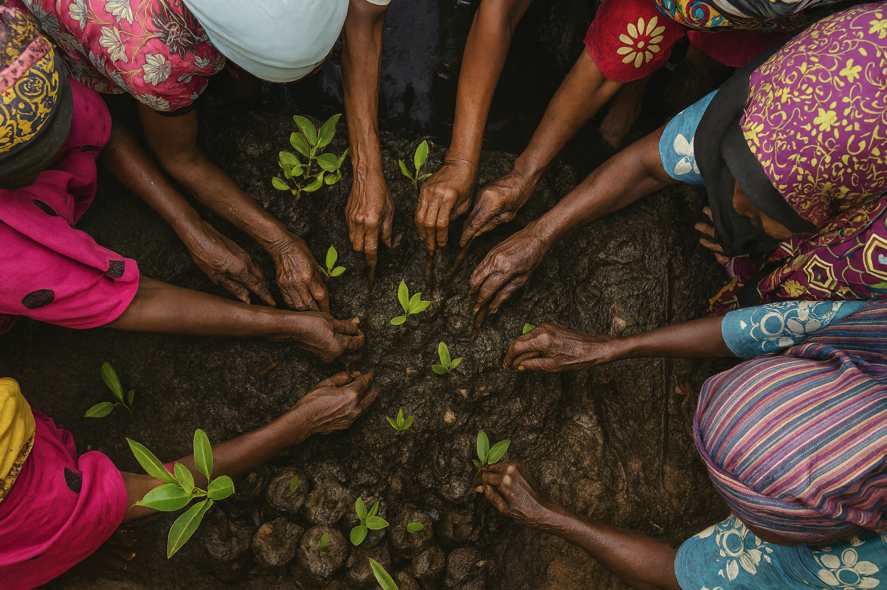

<title>Case Studies – Community Eco-Credit</title>
<meta name="description" content="Examples of community eco-credit in practice, 
including projects in Tanzania and Kenya with Mwambao, COMRED, Rikolto, TIMAP and Sea Sense.">
<link rel="canonical" href="https://greenfi.org/studies.html">

<section id="studies">
  <h2><i data-lucide="notebook-text"></i>Case Studies</h2>

  <h3><i data-lucide="waves"></i>1. MKUBA (Tanzania)</h3>
  <p>
    The MKUBA programme is operated by Mwambao/MCCC Ltd, initially on Pemba and Zanzibar Islands 
    and now on the mainland coast of Tanzania too. 
    
    The programme has operated since 2018 and currently supports 200 groups. 
    Groups attach a variety of environmental requirements to loan terms, including use of legal fishing gear, 
    respect for seasonal closures, application of by-laws, 
    attendance at meetings, environmental awareness raising, reporting of infractions, patrols, 
    mangrove planting, and beach clean-ups. Mwambao have ensured that groups are linked to 
    local community-based natural resource management institutions so that environmental activities are coordinated 
    across common pool resources. A video explaining the approach is available below, and MKUBA's own webpage is 
  <a href="https://mwambao.or.tz/eco-credit-model/" target="_blank">here</a>.
  </p>  
  <p></p>
    This was the first time we experimented with 
    eco-credit managed by informal financial self-help groups rather than formal financial institutions and provision
    of the eco-credit methodology to an NGO rather than formal financial institutions. We first designed the eco-credit instrument that sits at the heart of the MKUBA model, 
    and then solely financed the set-up of the first groups, and first round of capitalisation, 
    with further capitalisation and set-up financed by the Darwin Initiative 
    via Fauna & Flora International, TNC and then the World Bank amongst other funders too.
  </p>

  <div class="video-wrapper">
    <iframe 
        src="https://www.youtube.com/embed/afLvgfGS5ho" 
        title="Case Study Video"
        frameborder="0" 
        allowfullscreen>
    </iframe>
    </div>

  <h3><i data-lucide="waves"></i>2. Kwale Eco-Credit Project (Kenya)</h3>
  <p>
  The Kwale Eco-Credit Project is run by COMRED along the coastline of Kwale County in Kenya. 
  It started in 2021 and has established 32 groups. The main activities are mangrove propagule planting and beach clean-ups. 
  COMRED has experimented with capitalisation of groups via direct cash grants and also grants for purchase of 
  income-generating assets. Income from these assets is then used to capitalise groups. This project has been widely covered in 
  <a href="https://www.the-star.co.ke/opinion/2023-01-02-eco-credit-scheme-drives-kwale-to-protect-habitat" target="_blank" rel="noopener">
    local media
  </a> and <a href="https://www.comred.or.ke/program/eco-credit-and-livelihood-program" target="_blank">COMRED's website</a> provides detailed impact reporting.
</p>

<section class="image-block">
  
</section>

  <h3><i data-lucide="sprout"></i>3. Nyandarua Eco-Credit Project (Kenya)</h3>
  <p>
    The Nyandarua Eco-Credit Project was managed by Dr Obadiah Ngigi for Greenfi in Nyandarua County. 
    It began in 2020 with four groups, of which three are still operating. The focus has been 
    on-farm tree planting and simple soil conservation measures. The project ran as a stand-alone 
    effort rather than being embedded in an institution with groups self-determining environmental activities
    they wish to undertake.
  </p>

  

  <h3><i data-lucide="sprout"></i>4. Nature Fundi (Tanzania)</h3>
  <p>
  Nature Fundi is implemented in Mbeya Region by Rikolto Tanzania and the Tanzanian Informal 
  Microfinance Association of Practitioners (TIMAP). Funding is provided by the REDAA fund, 
  managed by IIED on behalf of FCDO. The project has capitalised 42 groups with funding in place to 
  fund a further 58 groups. The focus of this project is adoption of sustainable farming practices by group
  members, with groups choosing practices appropriate to their local farms. 
  An interview with the Rikolot project manager describing the project is below and the REDAA description of the project is available 
  <a href="https://www.redaa.org/devolving-resilience-finance-community-level" target="_blank" rel="noopener">
    here
  </a>. 
</p>


  <div class="video-wrapper">
    <iframe 
        src="https://www.youtube.com/embed/s8ZKASA9ZuU?start=64" 
        title="Case Study Video"
        frameborder="0" 
        allowfullscreen>
    </iframe>
    </div>

  <h3><i data-lucide="waves"></i>5. Sea Sense (Tanzania)</h3>
  <p>
  Sea Sense is a local NGO working on the Tanzanian coast, with funding to support 19 community groups. 
  The project promotes the use of legal fishing gear, mangrove planting, and beach clean-ups, while also 
  supporting sustainable livelihoods linked to conservation. In 2024, their efforts included the planting of 
  over 57,000 mangroves and active participation by community groups in protecting coastal ecosystems. 
  The Sea Sense website is available <a href="https://seasense.or.tz/" target="_blank" rel="noopener">here</a>, 
  and their 2024 impact report can be accessed 
  <a href="https://seasense.or.tz/fileadmin/04-downloads/Sea_sense_Annual_Report_2024.pdf" target="_blank" rel="noopener">here</a>.
</p>

<p>
  <a href="#about" data-section="about" class="cta-link">
    Continue to About Greenfi.org
  </a>
  </p>
</section>
